Songs For What We're Building And What We Carry
Indie folk rock from the mountains of North Idaho.
Listen NowAbout
Justin Lantrip picked up a guitar at 22 and never looked back. What started as a quiet curiosity quickly became an all-consuming drive to learn, write, and express something honest through music.
Based in Sandpoint, Idaho, Justin has spent over fifteen years honing his craft as a singer-songwriter, self-producing albums from his own studio and performing at venues like the historic Panida Theater. His sound blends indie folk rock with introspective storytelling into something unmistakably his own.
With five albums to his name and a catalog of deeply personal songs, each record marks another step closer to capturing what he feels inside. From the early fire of I Am My Will to the painted landscapes of Paper Bird to the raw energy of Flood Gates, his music traces a journey of growth, loss, and discovery.
Discography
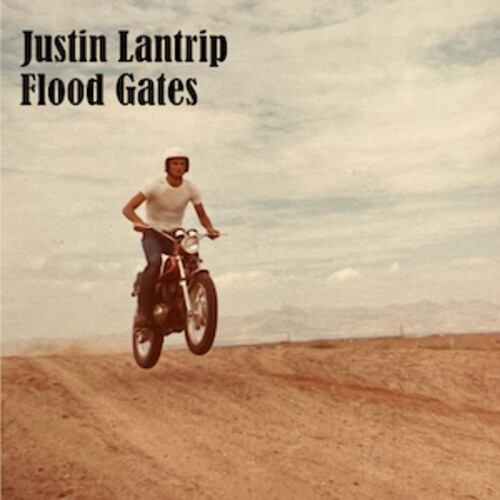
202210 tracks
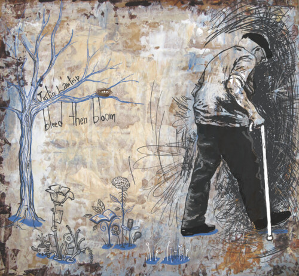
201210 tracks
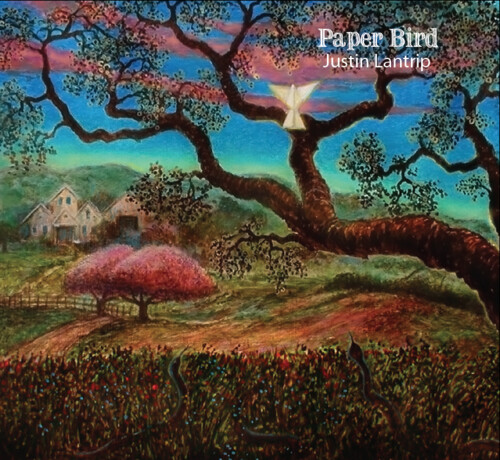
201311 tracks
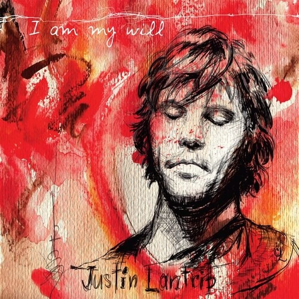
201011 tracks
Stream
The Future of Music
Music is changing. Fountain is building the future of how artists and listeners connect — where every stream directly supports the creator. This is how music should work, and I'm proud to be part of it.
If you want to support independent music in a real way, listen on Fountain. It matters more than you know.
Listen on FountainGallery
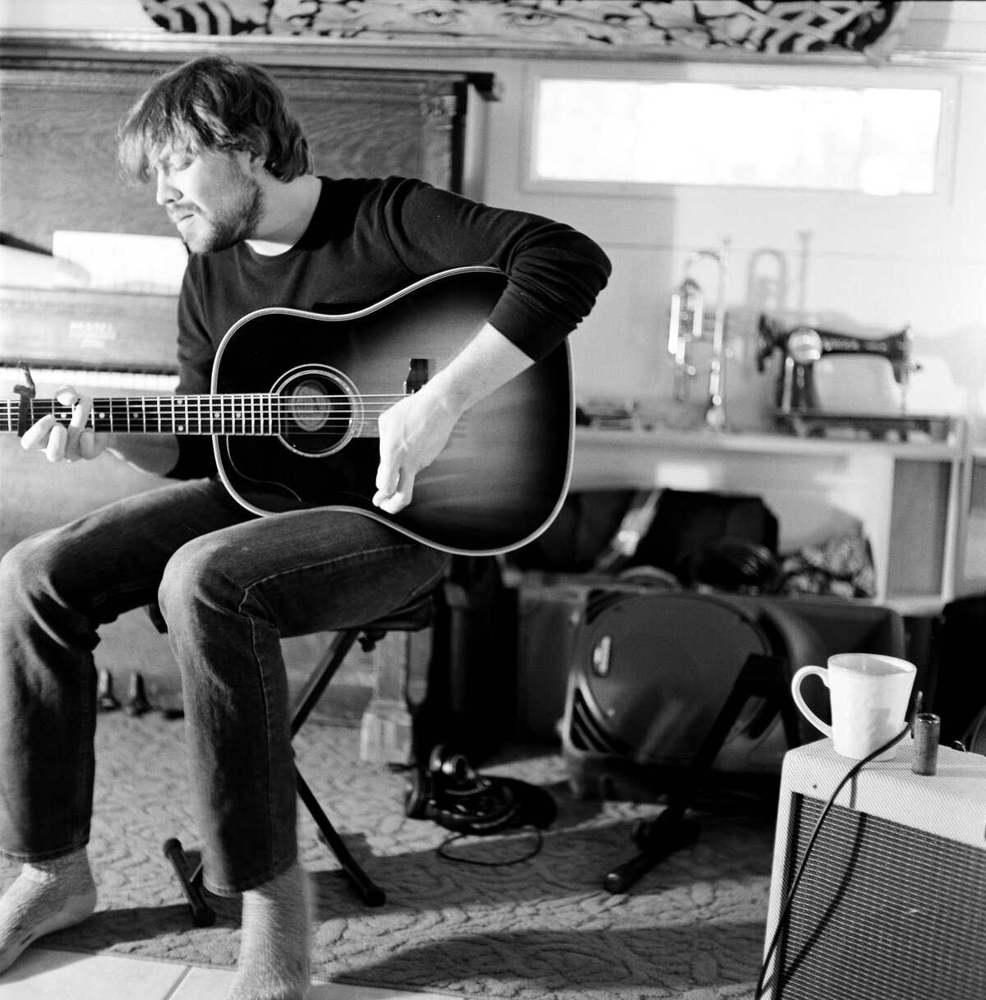
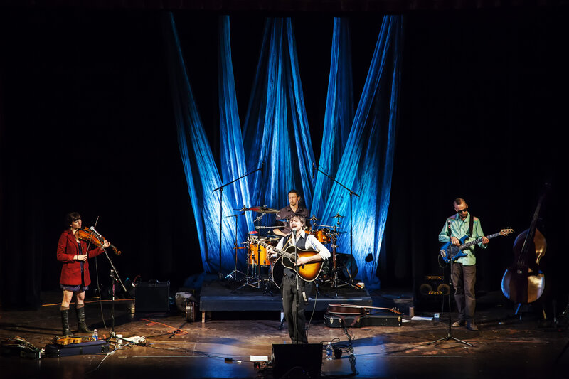
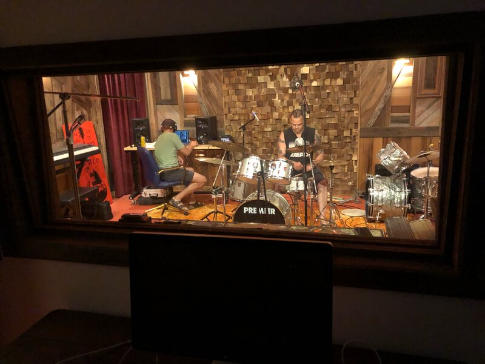
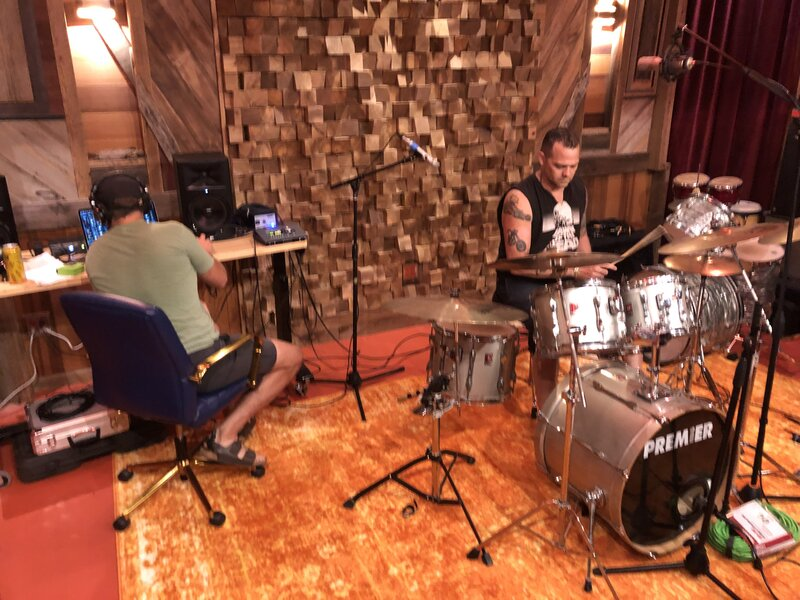
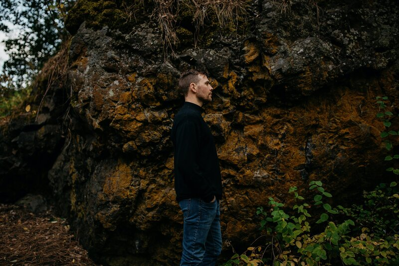
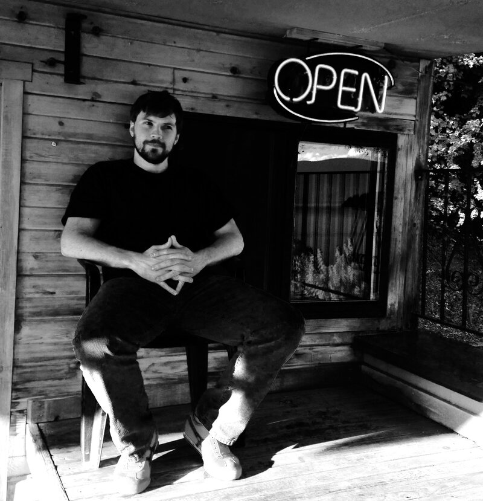
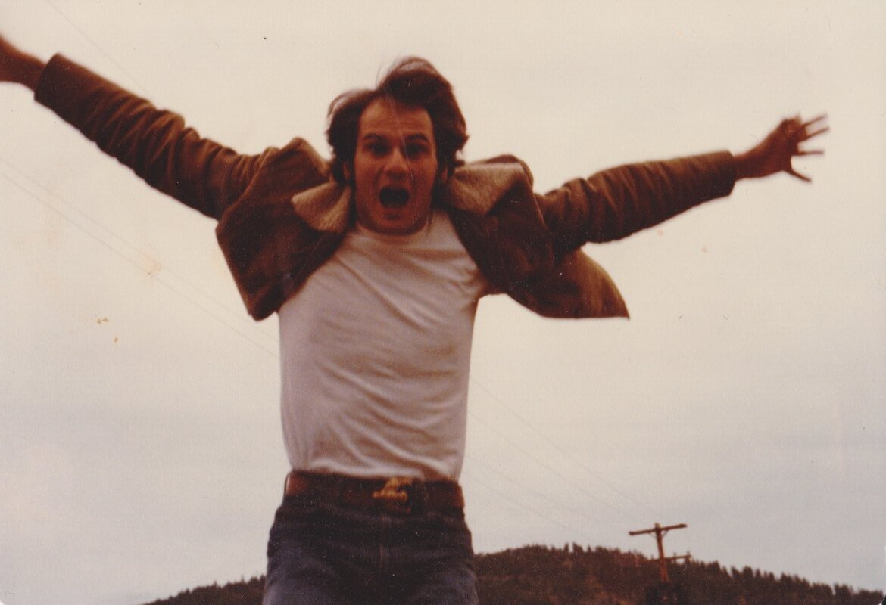
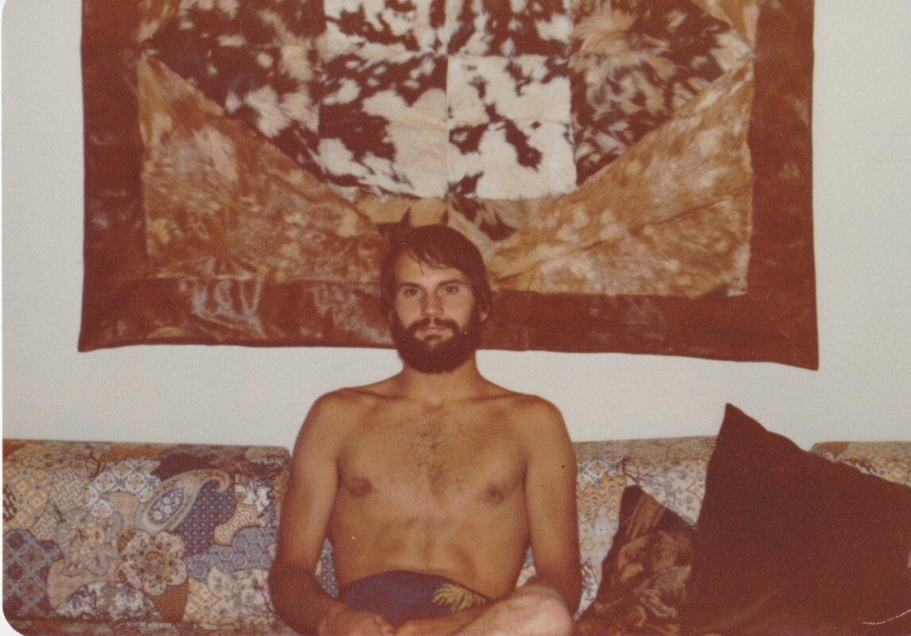
Press
Bonner County Daily Bee — April 5, 2013
"For local musician Justin Lantrip, the Saturday performance of his new album at the Panida Theater marks both an end and a beginning."
KRFY Community Radio — Featured Guest
Featured on KRFY Radio's "Between the Notes" program, showcasing original songs and the story behind the music from Sandpoint's own singer-songwriter.
Connect
For bookings, collaborations, or just to say hello — find me on any of these platforms.
Booking & inquiries: justinlantrip@gmail.com